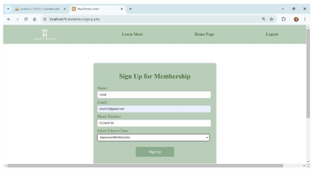
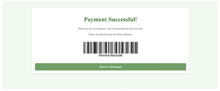
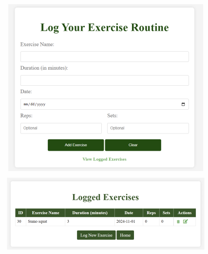
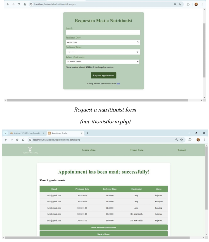
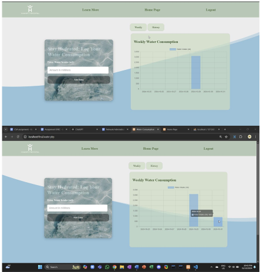

A · SIGN UP
Pick your membership.
Selecting the membership sign-up button opens a form where users enter their details and choose a fitness class.
Health & Wellness / Web App
A wellness platform bringing fitness tracking, membership, nutritionist appointments, and everyday health records together in one place.

01 / Homepage
The homepage welcomes both logged-in and guest users, with content tailored to their login status. It acts as the central hub for exploring the site’s wellness tools, including exercise logging, water tracking, and nutritionist appointments.
A clear route to the tools that support your wellbeing.
02 / Membership
Membership sign-up guides users from entering their details to confirming a successful payment.

Selecting the membership sign-up button opens a form where users enter their details and choose a fitness class.

The success page confirms that payment was processed and membership activated. If an active member tries to sign up again, the site reports their current status and expiry date, one month after the original sign-up.
03 / Exercise history
The Exercise section opens with a log of previously recorded workouts, organized by exercise and date. Users can review entries and edit or delete a record when needed.
Log it · Review it · Keep moving.

04 / Nutritionist appointments
Users can request a nutritionist by choosing appointment details, then review their appointments and see whether each request is pending, accepted, or rejected. They can book another appointment or return home.
Request an appointment and follow its status.05 / Water consumption
Users record water intake and track it over time. The weekly view keeps seven days of entries and updates a bar chart with the total millilitres logged. The history view shows the month’s records as a line graph.
A weekly snapshot and monthly history.